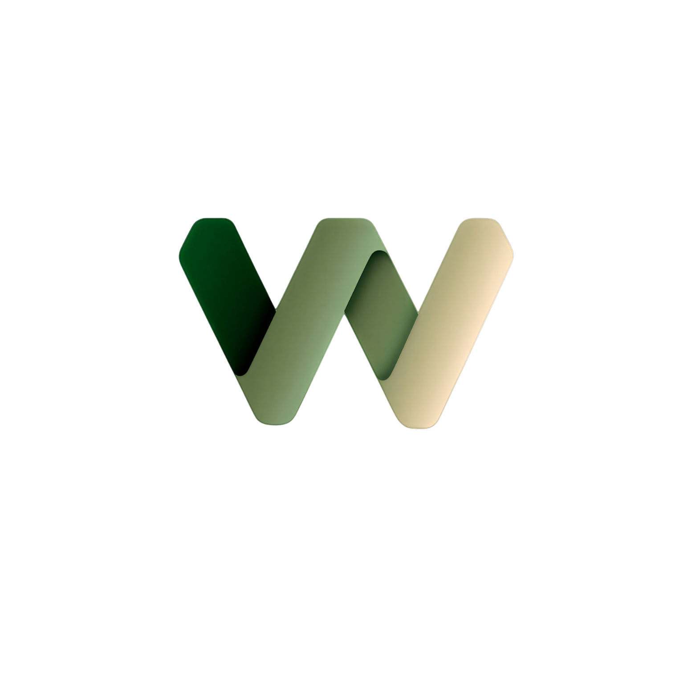

About
Growth & Operations Partner for founders who need more than just an extra pair of hands.
The story
8+
Years EA Experience
3
Continents Worked
1st
Class Honours Degree
I built a career supporting people who were doing genuinely important, high-stakes work — and I got very good at making sure that work wasn't lost to operational friction.
My background spans government executive support, documentary film production, and the creative industries. During New Zealand's Covid-19 response, I worked as Executive Assistant to senior government officials — where the stakes were real, the pace was relentless, and the margin for error was zero. It taught me what operational precision actually looks like under pressure.
After that, I worked in production support on a David Attenborough documentary series — an experience that reinforced everything I believe about what makes complex, multi-stakeholder projects succeed. It's rarely the ideas that fail. It's the execution infrastructure around them.
I have a first-class Honours degree in Anthropology — which might seem an unusual foundation for an operations career, but it shapes how I think. Understanding how people work, what creates friction in systems, and how organisations behave under stress has made me a better operational partner than any process certification ever could.
I created Verdant Virtual because I kept watching talented founders spend their energy managing operational load that didn't need to be theirs. The name comes from something I believe: growth requires the right conditions. You can't force it. But you can tend it.
"Growth doesn't happen in chaos. It happens when things are well tended."
What I believe
"A founder's most valuable resource isn't time. It's focused attention. My job is to protect both."

You always know exactly what's been done, what's in progress, and what's coming next. No vague updates, no missing context, no surprises.
My government background means I'm used to working where mistakes have real consequences. I bring that same level of care to every client I work with.
I work with a small number of clients so I can go deep rather than wide. When I take something on, I treat it as if it's my own business on the line.
I don't just complete tasks — I look at the process around the task. Why is it taking this long? What breaks down when it fails? How do we prevent that?
No jargon, no over-explaining, no unnecessary back-and-forth. I ask what I need to ask, give you what you need to know, and get on with it.
Government, film, creative industries — I've moved between very different environments and adjusted quickly each time. Your business is unique; I adapt to it, not the other way around.
Timeline
Senior EA support to government officials during the Covid-19 response — managing critical communications, briefings, and logistics during one of New Zealand's most high-stakes periods. Absolute discretion, precision, and reliability under relentless pressure.
Operational and administrative support on a flagship Attenborough nature documentary — coordinating across production teams, managing schedules, and ensuring the logistical infrastructure supported the creative work at every stage.
A first-class degree with a research focus that developed strong analytical thinking, systems awareness, and an understanding of how people and organisations behave. The intellectual foundation behind everything I do operationally.
Bringing everything I've built — the EA precision, the systems thinking, the cross-sector experience — to founders who need genuine operational partnership rather than task completion. Based in the UK, working remotely with clients globally.
Ready to start?
A 30-minute conversation to understand your business and figure out whether we're the right fit. No pitch, no pressure — just an honest discussion.